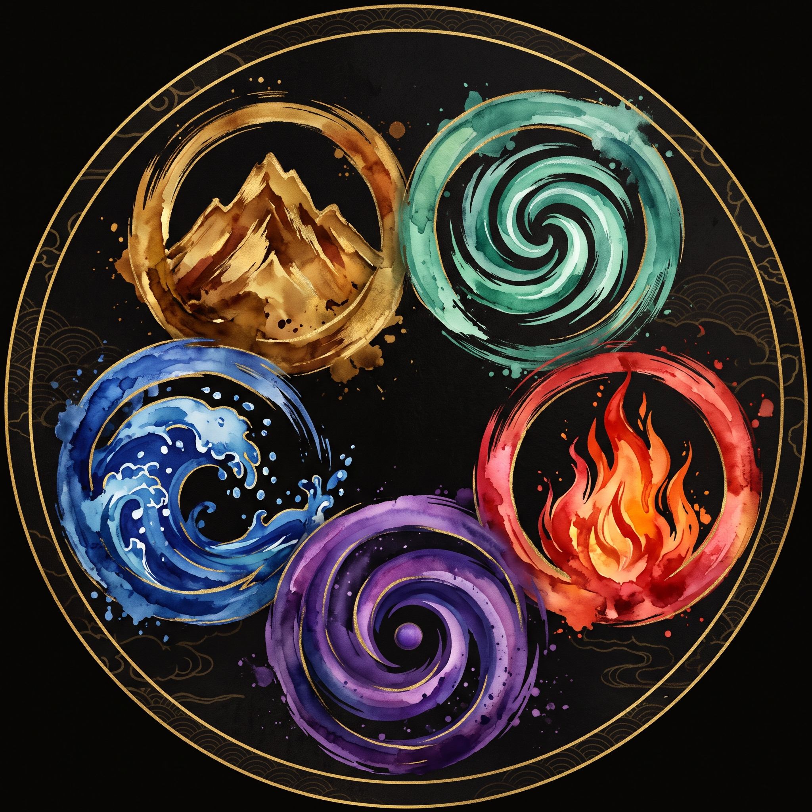
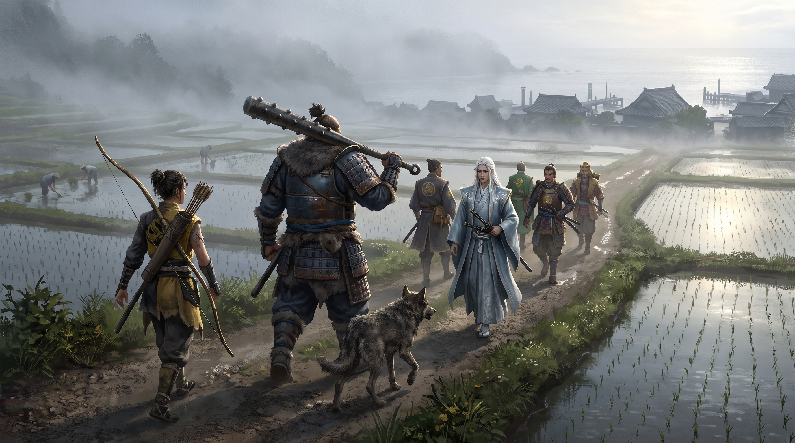
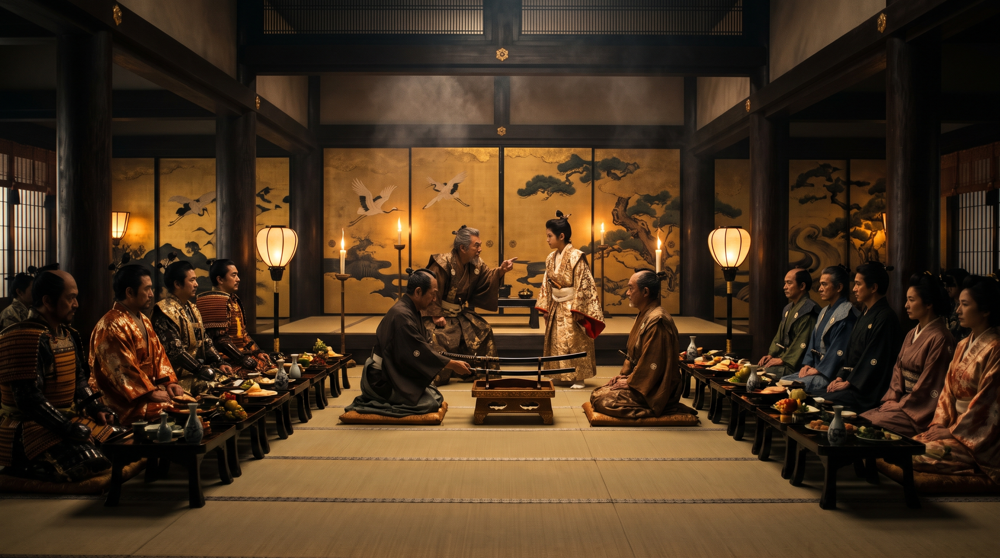
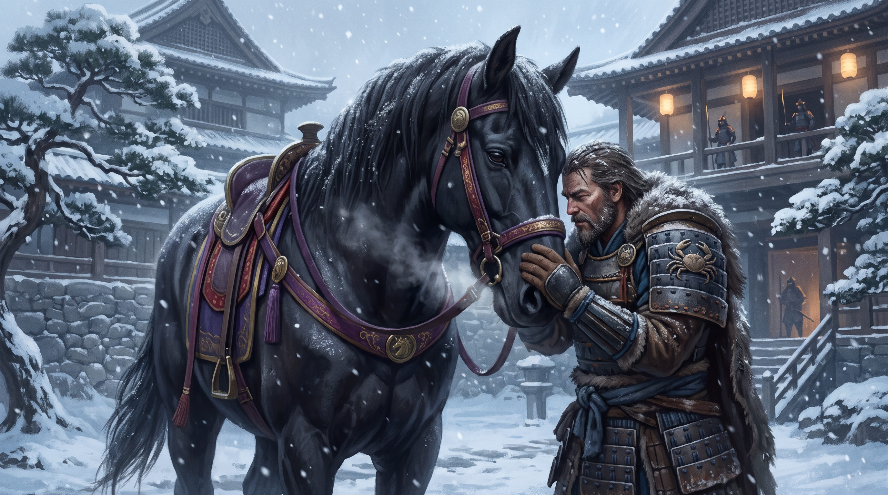

LES CHRONIQUES DE ROKUGAN
« Dans mon sabre, le vent. Dans mon cœur, le courage. Dans mes yeux, la mort. »
Retrouvez les récits complets et sonorisées de nos scénarios de campagne, forgez et sauvegardez votre samouraï avec son histoire, ou consultez le Grimoire des sorts élémentaires.
🏯 LE DOJO DES SAMOURAÏS — VOS CRÉATIONS & LES HÉROS DE LA TABLE
Retrouvez vos personnages sauvegardés dans la Forge ainsi que les protagonistes historiques de la campagne.Éclaireur aux yeux jaunes accompagné de son loup fidèle.
Colosse inébranlable maniant un tetsubo dévastateur.
Tireur d'élite pragmatique, médecin et chroniqueur.
Mystique flamboyant en communion avec les Kamis.
Champion du tournoi de Topaze à la lame fulgurante.
Escrimeur silencieux maniant la technique des deux sabres.
Le monstre au Tetsubo.
Le dernier arrivé, vaillant et pragmatique s'exprimant avec ses deux sabres.
L'ATELIER DU SAMOURAÏ — OUTILS INTERACTIFS
Création de fiche avec les 20 questions, grimoire et export vers le Carnet de Rokugan.Forge de Personnage
Calcul automatique des 5 Anneaux, affichage conditionnel Katas/Sorts, questionnaire des 20 questions, plateau de dés Roll & Keep et impression PDF A4.
Grimoire des Prières & Sorts
Consultez les invocations élémentaires (Terre, Eau, Feu, Air, Vide) et les Kihos de la Confrérie avec filtres par rang et élément.
Carnet de Rokugan
Exportez votre fiche directement au format JSON compatible avec l'application Carnet de Rokugan pour vos séances de jeu sur table.
Scénarios de la Campagne du MJ David
Lisez ou écoutez les récits intégraux rédigés par les joueurs, illustrés scène par scène.

Scénario 1 : Championnat de Topaze
La rencontre des novices sur la route de Tsuma, l'énigmatique Megumi, les épreuves du tournoi impérial et l'assassinat nocturne du daimyo du Clan du Blaireau.

Scénario 2 : Meurtre au Château de Kyoteï
Invités au banquet du Festival des Morts par le daimyo Tsume Retsu, les PJ sont mandatés comme magistrats après son assassinat derrière un plancher rossignol.

Scénario 3 : Le dernier voyage
Guidés à travers la neige par Xian, l'étalon de Shinjo Shimura, les samouraïs découvrent le jardin zen d'Ikko et affrontent une cellule secrète du Kolat.
LES HUIT GRANDS CLANS DE L'EMPIRE
Histoire, familles vassales, doctrines du Bushido et accès direct à la création.CLAN DU CRABE
Défenseurs stoïques du Mur Kaiu contre les hordes de l'Outremonde. Maîtres des armes lourdes et du jade.
CLAN DE LA GRUE
Arbitres de l'étiquette à la cour impériale et duellistes insurpassés dans l'art sacré de l'Iaijutsu.
CLAN DU DRAGON
Gardiens énigmatiques des montagnes, escrimeurs Niten à deux sabres, enquêteurs Kitsuki et moines tatoués.
CLAN DU LION
Le Sabre Droit de l'Empereur, stratèges infaillibles et légions de guerriers voués corps et âme au Bushido.
CLAN DE LA MANTE
Fils des tempêtes océaniques, maîtres du commerce maritime et archers d'élite de la lignée Tsuruchi.
CLAN DU PHÉNIX
Gardiens de la voix des Kami, maîtres des cinq éléments et du Vide, protégés par les yojimbos Shiba.
Aides de Jeu & Arbitrage Rapide
Guides de référence immédiate imprimables pour les joueurs et le MJ en pleine séance.Combat & Duels Iaijutsu
Les 3 étapes d'un round d'escarmouche, les 5 postures (Attaque, Attaque Totale, Défense, Défense Totale, Centre), le duel en 3 phases et les Augmentations.
Code du Bushido & Honneur
Les 7 vertus cardinales, la trinité sociale (Honneur, Gloire, Statut), le barème officiel de la Table 2.3 et les règles des Doigts de Jade contre la Souillure.
Étiquette & Coutumes
L'Ordre Céleste (Kuge, Buke, Heimin, Hinin), le protocole du Daisho, la règle des cadeaux en 3 refus, la cérémonie du thé et l'art de sauver la face.